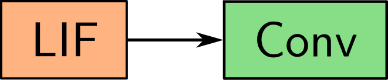

Norse: Machine Learning with SNN
January 18, 2023

Blazing fast

Feels amazing to use

Quick to get started
Blazing fast
- PyTorch already takes care of most of the work.
- Implementation is performance aware.
- Custom code for selected operations.
Feels amazing to use
- Complexity is revealed gradually.
- Sensible defaults.
- Easily customisable and extensible.
Quick to get started
Install the PIP or conda package:
pip install norse
- Try out one of the jupyter notebooks.
- Read our interactive documentation.
- End-to-end example tasks.
Event-based processing with Norse
- Asynchronous and parallel - perfect for neuromorphics

Event-based neuron models



Event-based edge detector

import torch
from norse.torch import LIFRefracCell
model = nn.Sequential(
LIFRefracCell(),
torch.nn.Conv2d(1, 1, 5),
)
Familiar to ML researchers

Compose primitives freely

Extensible by everyone
Familiar to ML researchers
- Build models like you would in PyTorch.
- Use dataloaders and training frameworks as is.
- Mix ANN and SNN layers.
Compose primitives freely
Convolutional Neural Network
import torch, torch.nn as nn
model = nn.Sequential(
nn.Conv2d(1, 20, 5, 1),
nn.ReLU(),
nn.MaxPool2d(2, 2),
nn.Conv2d(20, 50, 5, 1),
nn.ReLU(),
nn.MaxPool2d(2, 2),
nn.Flatten(),
nn.Linear(800, 10)
nn.Identity()
)
Compose primitives freely
Convolutional Spiking Neural Network
import torch, torch.nn as nn
from norse.torch import LICell
from norse.torch import LIFCell
from norse.torch import SequentialState
model = SequentialState(
nn.Conv2d(1, 20, 5, 1),
LIFCell(),
nn.MaxPool2d(2, 2),
nn.Conv2d(20, 50, 5, 1),
LIFCell(),
nn.MaxPool2d(2, 2),
nn.Flatten(),
nn.Linear(800, 10),
LICell(),
)
Compose primitives freely
Convolutional Spiking Neural Network
import torch, torch.nn as nn
from norse.torch import LICell
from norse.torch import AdexCell
from norse.torch import SequentialState, Lift
model = SequentialState(
nn.Conv2d(1, 20, 5, 1),
AdexCell(),
nn.MaxPool2d(2, 2),
nn.Conv2d(20, 50, 5, 1),
AdexCell(),
nn.MaxPool2d(2, 2),
nn.Flatten(),
nn.Linear(800, 10),
LICell(),
)
Compose primitives freely
Convolutional Spiking Neural Network
import torch, torch.nn as nn
from norse.torch import LICell
from norse.torch import IAFCell
from norse.torch import SequentialState
model = SequentialState(
nn.Conv2d(1, 20, 5, 1),
IAFCell(),
nn.MaxPool2d(2, 2),
nn.Conv2d(20, 50, 5, 1),
IAFCell(),
nn.MaxPool2d(2, 2),
nn.Flatten(),
nn.Linear(800, 10),
LICell(),
)
Compose primitives freely
Convolutional Spiking Neural Network
import torch, torch.nn as nn
from norse.torch import LI
from norse.torch import LIF
from norse.torch import Lift
model = nn.Sequential(
Lift(nn.Conv2d(1, 20, 5, 1)),
LIF(),
Lift(nn.MaxPool2d(2, 2)),
Lift(nn.Conv2d(20, 50, 5, 1)),
LIF(),
Lift(nn.MaxPool2d(2, 2)),
Lift(nn.Flatten()),
Lift(nn.Linear(800, 10)),
LI(),
)
Event streaming
Deep Learning
Schedule
- 9:00 - 9:30: Presentation + Questions (<- we are here)
- 9:30 - 10:15: Workshop 1/2
 Event
streaming (Jens)
Event
streaming (Jens) Deep learning
(Christian)
Deep learning
(Christian)
- 10:15 - 10:30: Break
- 10:30 - 11:15: Workshop 2/2
 Event
streaming (Jens)
Event
streaming (Jens) Deep learning
(Christian)
Deep learning
(Christian)
- 11:15 - 11:30: Q&A
Funding & Acknowledgements
The research has received funding from the EC Horizon 2020 Framework Programme under Grant Agreements 785907 and 945539 (HBP) and by the Deutsche Forschungsgemeinschaft (DFG, German Research Fundation) under Germany’s Excellence Strategy EXC 2181/1 - 390900948 (the Heidelberg STRUCTURES Excellence Cluster).